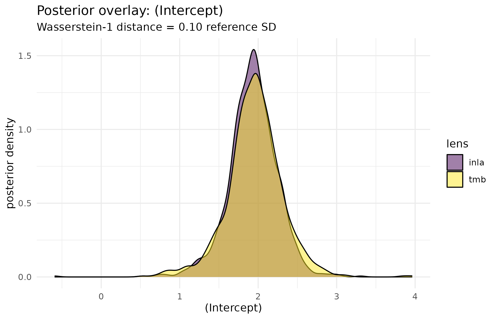

Why
A colleague has just produced a second fit of the same mixed model, this time from glmmTMB’s Laplace approximation rather than the hub’s INLA backend. Before the two can stand side by side in a quorum, each has to say what it shares with the other and what it does not – otherwise “the two lenses agree” could mean nothing more than “the two lenses share a sampler”. This vignette builds that declaration from the ground up: what a lens must say about itself, how much two lenses actually share once they say it, and how far apart their posteriors sit once the sharing is accounted for.
What
A quorum_lens() (built with lens()) is a
member’s fitter behind three declarations. shares names
what the lens has in common with every other lens across four components
– sampler, objective, priors and
data_prep – and is what quorum_independence()
reads to weigh an agreement. expresses names the response
shapes the lens can represent (linear,
plateau, threshold, nonmonotone).
scope is a gate: a function of the specification that
returns TRUE inside the lens’s corner and a
quorum_abstention() outside it, so a model the lens cannot
field is declined rather than mis-fitted. Its
fit(spec, data, ...) returns a quorum_draws()
– a named list of numeric draws, one vector per parameter, for a lens of
kind "parameters" – or a quorum_abstention()
when it cannot answer this particular model.
agreement_pairwise() compares two lenses’ draws component
by component; quorum() is the front door that gates, fits,
compares and resolves a whole quorum of lenses at once.
Do
Engines available on this build
Two of this vignette’s sections need an optional engine each:
lens_tmb() needs glmmTMB and
tmbstan, and the hub comparison needs INLA
through flexyBayes::flexybayes(). Each guarded chunk below
checks for its own engine and prints one sentence in its place when the
engine is absent, so the vignette still renders – with less to read – on
a build that carries neither.
has_tmb <- requireNamespace("glmmTMB", quietly = TRUE) &&
requireNamespace("tmbstan", quietly = TRUE)
has_inla <- requireNamespace("INLA", quietly = TRUE)
has_ggplot2 <- requireNamespace("ggplot2", quietly = TRUE)
engines_ok <- has_tmb && has_inlaA tiny synthetic toy
A synthetic Gaussian random-intercept toy: 60 observations in 6 groups, an intercept of 2, and a group-level SD of 0.8, seeded for reproducibility. Real data would work the same way; the toy exists only to keep both fits fast.
set.seed(20260902)
n <- 60L
n_groups <- 6L
g <- factor(rep(seq_len(n_groups), each = n / n_groups))
u <- rnorm(n_groups, 0, 0.8)
data_toy <- data.frame(y = 2 + u[as.integer(g)] + rnorm(n, 0, 1), g = g)
head(data_toy)
#> y g
#> 1 4.027361 1
#> 2 4.263503 1
#> 3 0.769172 1
#> 4 2.880675 1
#> 5 1.499465 1
#> 6 2.118333 1A worked TMB lens
lens_tmb() fits glmmTMB’s Laplace-approximated marginal
likelihood and then samples the very TMB objective that fit produced
with tmbstan’s NUTS sampler – a second Laplace family
distinct from INLA’s, and one objective sampled two ways. The call below
keeps the chain count and iteration count small, which is enough for a
toy this size and is exactly what keeps this vignette fast.
tmb_lens <- lens_tmb(chains = 2L, iter = 1000L)
tmb_draws <- tmb_lens@fit(y ~ 1 + (1 | g), data_toy)
#> Warning: Tail Effective Samples Size (ESS) is too low, indicating posterior variances and tail quantiles may be unreliable.
#> Running the chains for more iterations may help. See
#> https://mc-stan.org/misc/warnings.html#tail-ess
tmb_draws@source
#> [1] "glmmTMB+tmbstan"
names(tmb_draws@draws)
#> [1] "(Intercept)" "sd_g"A second lens from the hub
lens_from_fit() wraps a model somebody has already
fitted – here, the hub’s own INLA backend on the identical formula – and
canonicalises its draws onto the same parameter names the TMB lens uses,
so the two are comparable component by component with no relabelling
step.
withr::local_options(list(flexyBayes.silence_default_prior_note = TRUE))
hub_fit <- flexyBayes::flexybayes(
y ~ 1 + (1 | g), data = data_toy, backend = "inla", verbose = FALSE,
seed = 1L
)
#> flexyBayes: `seed` is a Stan sampler setting the INLA backend does not use, so it has no effect on this fit. INLA's nested Laplace approximation draws no random numbers, so `seed` cannot pin a fit. On a well-identified model two runs agree because the optimiser does. On a weakly identified variance component the landing point can move, so treat that the same way as a failed sampler diagnostic, not as something a seed would fix.
hub_lens <- lens_from_fit(hub_fit, name = "inla")
if (is_quorum_abstention(hub_lens)) {
# a lens that cannot hand over its draws declines, typed, and the rest of
# the comparison is skipped rather than run against nothing
print(hub_lens)
engines_ok <- FALSE
} else {
hub_draws <- hub_lens@fit(NULL, NULL)
names(hub_draws@draws)
}
#> [1] "(Intercept)" "sigma" "sd_g"How much the two lenses actually share
ind <- quorum_independence(list(tmb_lens, hub_lens))
ind
#> <quorum independence ledger>
#> components: sampler, objective, priors, data_prep
#> evidential weight (1 = shares nothing, 0 = shares everything)
#> tmb inla
#> tmb NA 1
#> inla 1 NA
#> data independence: NA
#> Agreement between lenses fitted to the same data is agreement, not corroboration of a shared data fact.| tmb | inla | |
|---|---|---|
| tmb | NA | 1 |
| inla | 1 | NA |
Both lenses declare every one of the four components differently – a Laplace sampler against Stan’s NUTS, the TMB objective against INLA’s own, a hub-matched gamma prior against INLA’s default fixed-effect prior as the hub applies it, and quorum’s own data preparation against the hub’s – so the ledger gives the pair the full evidential weight of 1: nothing about their agreement can be explained by something they share.
How far apart their posteriors sit
agree <- agreement_pairwise(tmb_draws, hub_draws)
agree
#> param mean_a mean_b sd_a sd_b sd_ratio q025_diff
#> 1 (Intercept) 1.9546004 1.9299431 0.3558124 0.3173628 1.121153 -0.07783524
#> 2 sd_g 0.6845251 0.6602964 0.4439164 0.3786347 1.172413 -0.03778684
#> q975_diff wasserstein_1 mean_shift_sd w1_sd verdict
#> 1 0.1447766 0.03626885 0.06929863 0.1019325 discordant
#> 2 0.3894047 0.08930809 0.05457932 0.2011822 discordant
#> reason
#> 1 Wasserstein-1 0.10 SD; SD ratio 1.12
#> 2 Wasserstein-1 0.20 SD; SD ratio 1.17| param | mean_a | mean_b | sd_ratio | w1_sd | verdict |
|---|---|---|---|---|---|
| (Intercept) | 1.955 | 1.93 | 1.121 | 0.102 | discordant |
| sd_g | 0.685 | 0.66 | 1.172 | 0.201 | discordant |
Figure: the two posteriors, overlaid
w1_intercept <- agree$w1_sd[agree$param == "(Intercept)"]
overlay_df <- rbind(
data.frame(value = tmb_draws@draws[["(Intercept)"]], lens = "tmb"),
data.frame(value = hub_draws@draws[["(Intercept)"]], lens = "inla")
)
ggplot2::ggplot(overlay_df, ggplot2::aes(x = value, fill = lens)) +
ggplot2::geom_density(alpha = 0.5) +
ggplot2::scale_fill_viridis_d(name = "lens") +
ggplot2::labs(
x = "(Intercept)", y = "posterior density",
title = "Posterior overlay: (Intercept)",
subtitle = sprintf(
"Wasserstein-1 distance = %.2f reference SD", w1_intercept
)
) +
ggplot2::theme_minimal()
Posterior density of the intercept under the TMB lens (NUTS over the TMB objective) and the hub’s INLA lens, on the same synthetic toy. The subtitle carries the Wasserstein-1 distance between the two, in reference-SD units, from the agreement table above.
Comparing the two lenses through the front door
verdict <- quorum(
list(tmb_lens, hub_lens), spec = y ~ 1 + (1 | g), data = data_toy,
policy = quorum_policy(order = c("inla", "tmb"), min_lenses = 2L)
)
#> Warning: Tail Effective Samples Size (ESS) is too low, indicating posterior variances and tail quantiles may be unreliable.
#> Running the chains for more iterations may help. See
#> https://mc-stan.org/misc/warnings.html#tail-ess
verdict
#> <quorum verdict> status: discordant
#> lenses: 2 (2 contributing, 0 abstained)
#> carried: inla (decide) -> no number issued
#> findings: 0
#> independence: Agreement between lenses fitted to the same data is agreement, not corroboration of a shared data fact.Writing your own adapter
A lens needs no engine at all – only a fit() that
returns a quorum_draws() or a
quorum_abstention(), and the three declarations that say
what the estimate is worth alongside another lens’s. The toy below
moment-matches a Gaussian to the sample mean of data$y and
declares that it shares nothing with any engine-backed lens, because it
genuinely does not.
my_fit <- function(spec, data, ...) {
quorum_draws(
list(`(Intercept)` = rnorm(200L, mean(data$y), 1)),
source = "moment_matched"
)
}
my_lens <- lens(
name = "toy_moment_match", member = "example", fit = my_fit,
shares = c(sampler = "none", objective = "moment_matching",
priors = "none", data_prep = "quorum"),
expresses = "linear"
)
my_lens@fit(NULL, data_toy)
#> <quorum::quorum_draws>
#> @ kind : chr "parameters"
#> @ draws :List of 1
#> .. $ (Intercept): num [1:200] 1.463 1.136 1.447 2.181 0.758 ...
#> @ grid : NULL
#> @ n : int 200
#> @ source : chr "moment_matched"
#> @ diagnostics: list()Every built-in lens names its parameter draws on one shared
vocabulary, so that any two lenses – however different their engines –
line up component by component with no relabelling:
"(Intercept)" for the intercept, the model-matrix column
name for every other fixed-effect coefficient, "sigma" for
the residual standard deviation, and "sd_<group>" for
the standard deviation of a random intercept on grouping variable
<group>. A new adapter that wants to sit alongside
the built-in lenses names its own draws on that same vocabulary; a lens
that reports a component under any other name simply will not be found
by agreement_pairwise() when it looks for what the two
lenses have in common.
Read
On this run the intercept sits 0.1 reference SDs apart under the
Wasserstein-1 distance, and the pair’s overall verdict is
discordant. The front door carries the inla
lens’s answer regardless – quorum() compares lenses, it
never prices a decision, so with no decide argument the
carried answer is NA and only the comparison itself is
reported. Two lenses that share nothing can still disagree: independence
is what makes an agreement worth something, not a guarantee that one
will be found. The random-intercept SD (sd_g) is the harder
component here, which is expected on a toy this small – six groups leave
little information for a variance component, and the Laplace
approximation underlying the TMB lens is at its least reliable exactly
there.
Limits
This toy is synthetic and deliberately small, chosen to keep both
samplers fast rather than to stress either engine: six groups is too few
to identify a random-intercept SD precisely under any method, which is
part of why that component agrees less well than the intercept above.
The independence ledger reads only what a lens declares about itself; it
cannot discover an undeclared dependency, so a lens that mis-states its
own shares will mislead the ledger in a way no computation
here can catch. Agreement between two lenses fitted to the same data, as
both are here, is agreement about that dataset, not independent
corroboration of the fact behind it – the caveat
quorum_independence() attaches to every such pair says so
explicitly, and it is not repeated numerically in this vignette’s figure
or tables.
What to read next
A quorum of lenses on Study A0 applies the front door to 200
recorded decision cells and generalises the two-lens cascade this
vignette’s quorum() call is a miniature of. Getting
started with quorum introduces the three on-ramps – ensemble
ingestion, surrogate emulation, and the koine fourth opinion – that turn
a non-hub estimate into a lens without writing an adapter like the one
built here.
Reproduce
Seed 20260902 for the synthetic toy;
seed = 1L inside lens_tmb()’s default and
passed explicitly to flexyBayes::flexybayes(). Package
versions follow.
sessionInfo()
#> R version 4.6.1 (2026-06-24)
#> Platform: x86_64-pc-linux-gnu
#> Running under: Ubuntu 24.04.5 LTS
#>
#> Matrix products: default
#> BLAS: /usr/lib/x86_64-linux-gnu/openblas-pthread/libblas.so.3
#> LAPACK: /usr/lib/x86_64-linux-gnu/openblas-pthread/libopenblasp-r0.3.26.so; LAPACK version 3.12.0
#>
#> locale:
#> [1] LC_CTYPE=C.UTF-8 LC_NUMERIC=C LC_TIME=C.UTF-8
#> [4] LC_COLLATE=C.UTF-8 LC_MONETARY=C.UTF-8 LC_MESSAGES=C.UTF-8
#> [7] LC_PAPER=C.UTF-8 LC_NAME=C LC_ADDRESS=C
#> [10] LC_TELEPHONE=C LC_MEASUREMENT=C.UTF-8 LC_IDENTIFICATION=C
#>
#> time zone: UTC
#> tzcode source: system (glibc)
#>
#> attached base packages:
#> [1] stats graphics grDevices utils datasets methods base
#>
#> other attached packages:
#> [1] quorum_0.1.0.9000
#>
#> loaded via a namespace (and not attached):
#> [1] tidyselect_1.2.1 viridisLite_0.4.3
#> [3] glmmTMB_1.1.15.2 dplyr_1.2.1
#> [5] farver_2.1.2 loo_2.10.1
#> [7] S7_0.2.2 fastmap_1.2.0
#> [9] INLA_26.08.07 digest_0.6.39
#> [11] lifecycle_1.0.5 sf_1.1-3
#> [13] StanHeaders_2.39.1 processx_3.9.0
#> [15] magrittr_2.0.5 kernR_0.10.0.9000
#> [17] compiler_4.6.1 rlang_1.3.0
#> [19] sass_0.4.10 tools_4.6.1
#> [21] yaml_2.3.12 data.table_1.18.6.1
#> [23] knitr_1.52 labeling_0.4.3
#> [25] pkgbuild_1.4.8 classInt_0.4-11
#> [27] RColorBrewer_1.1-3 PESTO_0.11.1.9000
#> [29] KernSmooth_2.23-26 withr_3.0.3
#> [31] numDeriv_2016.8-1.1 desc_1.4.3
#> [33] grid_4.6.1 stats4_4.6.1
#> [35] e1071_1.7-17 inline_0.3.21
#> [37] ggplot2_4.0.3 scales_1.4.0
#> [39] MASS_7.3-65 cli_3.6.6
#> [41] rmarkdown_2.32 ragg_1.5.2
#> [43] reformulas_0.4.4 generics_0.1.4
#> [45] otel_0.2.0 RcppParallel_6.2.1
#> [47] minqa_1.2.8 DBI_1.3.0
#> [49] cachem_1.1.0 proxy_0.4-29
#> [51] rstan_2.32.7 tmbstan_1.2.1
#> [53] splines_4.6.1 parallel_4.6.1
#> [55] matrixStats_1.5.0 vctrs_0.7.3
#> [57] boot_1.3-32 Matrix_1.7-5
#> [59] sandwich_3.1-3 jsonlite_2.0.0
#> [61] callr_3.8.0 orchestraManifest_0.2.0.9000
#> [63] RTMB_2.0 systemfonts_1.3.2
#> [65] jquerylib_0.1.4 flexyBayes_0.18.1
#> [67] units_1.0-1 glue_1.8.1
#> [69] nloptr_2.2.1 pkgdown_2.2.1
#> [71] ps_1.9.3 codetools_0.2-20
#> [73] gtable_0.3.6 QuickJSR_1.11.0
#> [75] lme4_2.1-0 tibble_3.3.1
#> [77] pillar_1.11.1 htmltools_0.5.9
#> [79] R6_2.6.1 fmesher_0.8.0
#> [81] TMB_1.9.25 textshaping_1.0.5
#> [83] Rdpack_2.6.6 evaluate_1.0.5
#> [85] lattice_0.22-9 rbibutils_2.4.1
#> [87] bslib_0.12.0 MatrixModels_0.5-4
#> [89] class_7.3-23 Rcpp_1.1.2
#> [91] gridExtra_2.3.1 nlme_3.1-169
#> [93] mgcv_1.9-4 xfun_0.62
#> [95] fs_2.1.0 zoo_1.9-1
#> [97] pkgconfig_2.0.3